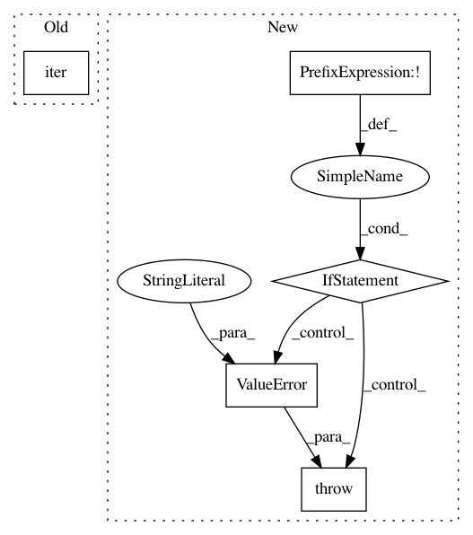

81d031d0c1da3c15cc08f4becebf83b5dfea1887,official/modeling/model_training_utils.py,,_get_input_iterator,#Any#Any#,42
Before Change
iterator = iter(
strategy.experimental_distribute_datasets_from_function(input_data))
else:
iterator = iter(strategy.experimental_distribute_dataset(input_data))
return iterator
def _float_metric_value(metric):
After Change
// When training with TPU pods, datasets needs to be cloned across
// workers. Since Dataset instance cannot be cloned in eager mode, we instead
// pass callable that returns a dataset.
if not callable(input_fn):
raise ValueError("`input_fn` should be a closure that returns a dataset.")
iterator = iter(
strategy.experimental_distribute_datasets_from_function(input_fn))
return iterator
In pattern: SUPERPATTERN
Frequency: 3
Non-data size: 5
Instances
Project Name: tensorflow/models
Commit Name: 81d031d0c1da3c15cc08f4becebf83b5dfea1887
Time: 2019-11-18
Author: hongkuny@google.com
File Name: official/modeling/model_training_utils.py
Class Name:
Method Name: _get_input_iterator
Project Name: sentinel-hub/eo-learn
Commit Name: 7b9bd544f6a2c09de907eeb0980d577434362b83
Time: 2019-06-19
Author: matej.aleksandrov@sinergise.com
File Name: mask/eolearn/mask/cloud_mask.py
Class Name: AddCloudMaskTask
Method Name: execute
Project Name: sentinel-hub/eo-learn
Commit Name: 2d5cb1852317e27a073b23d7691d51d17ccae77b
Time: 2019-07-23
Author: jovan.visnjic@sinergise.com
File Name: geometry/eolearn/geometry/morphology.py
Class Name: ErosionTask
Method Name: __init__